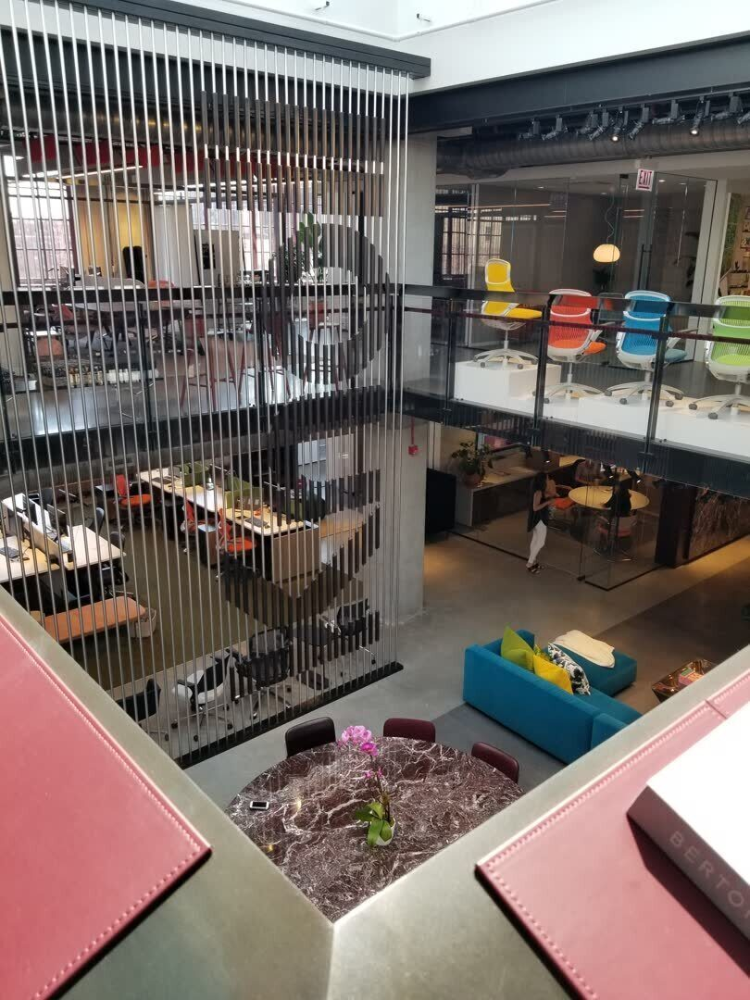
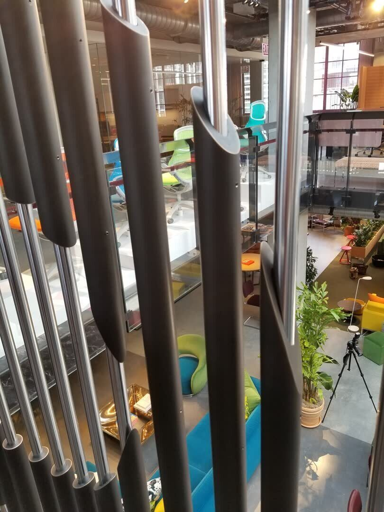
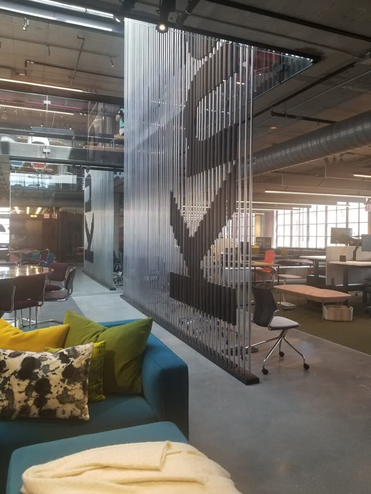
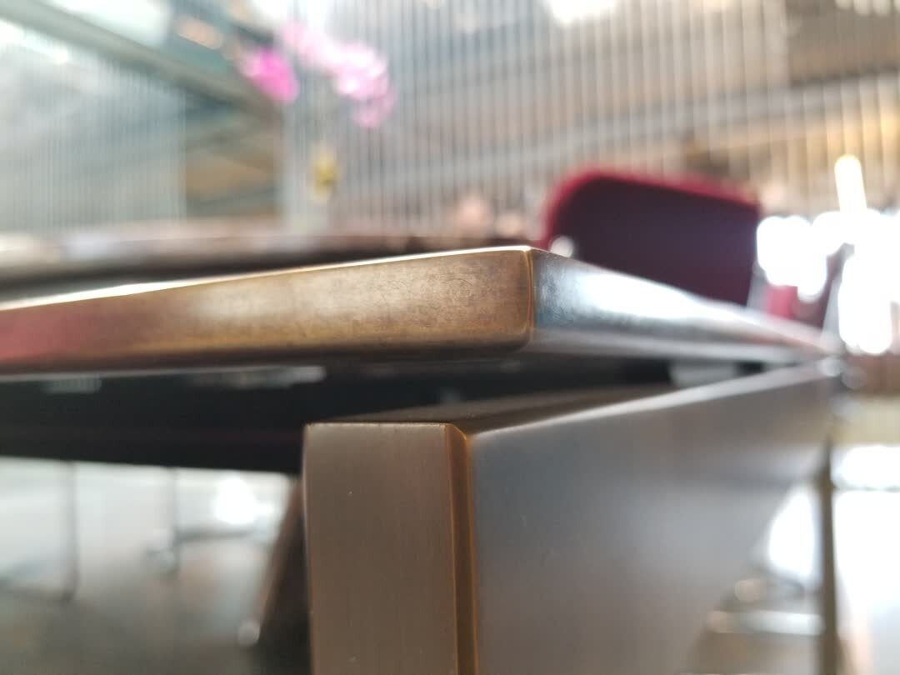
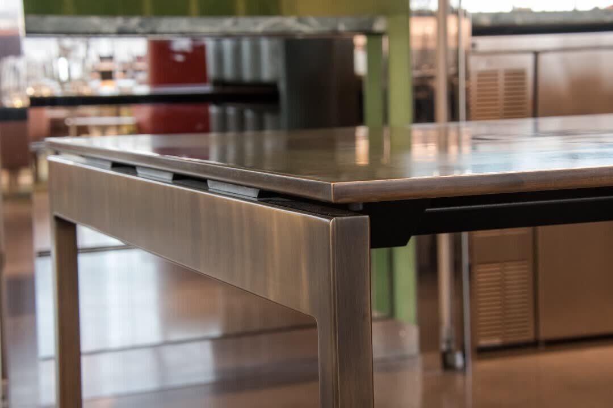

Architectural / 2019
Knoll Design Center
Fulton Market showroom rod screen
A floor-to-ceiling rod screen for Knoll's Chicago showroom, built from steel tubes and dark-coated segments that resolve into a graphic threshold as viewers move through the space.
Beyond the marquee sculpture and bronze table, the Knoll Chicago Design Center included a larger family of showroom fabrication.
This rod screen uses repetition, spacing, and dark-coated interruptions to create a graphic field that changes as the viewer moves. It works as a threshold, a spatial divider, and a brand-scaled material detail.
The fabrication had to hold a crisp line across many individual members, keeping the screen visually light while preserving the accuracy of the pattern.
Details
- Year
2019 - Location
Chicago, IL - Category
Architectural - Materials
Steel rods, plated metal, dark-coated metal
Credits
- Client: KNOLL
- Architecture and interiors: Gensler
- With CNL Projects
Download
Index




